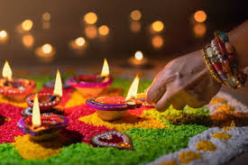

Indian Culture
Discover the rich and diverse culture of India, a land of unity in diversity.
Festivals
India celebrates a variety of festivals that reflect its rich cultural heritage and religious diversity:
- Diwali:Festival of Lights, symbolizing the victory of light over darkness.
- Holi:Festival of Colors, celebrating love and the arrival of spring.
- Eid:Festival of Harmony, marked by prayers, feasts, and charity.
- Christmas:Festival of Joy, celebrating the birth of Jesus Christ.

Diwali - The Festival of Lights
Languages
India is a linguistic treasure trove with 22 officially recognized languages and thousands of regional dialects:
Popular Languages in India
| Language |
Region |
| Hindi |
North India |
| Bengali |
West Bengal |
| Tamil |
Tamil Nadu |
| Telugu |
Andhra Pradesh |
Fun Fact
this is our indian culture
Traditional Attire
Indian traditional clothing varies by region, showcasing its cultural diversity.
- Saree:Elegant drape worn by women across India.
- Kurta-Pajama:Comfortable attire for men, popular in the north.
- Lehenga:A festive outfit for women, especially in weddings.
- Dhoti:Traditional men's wear in southern and eastern India.

Traditional Saree - Grace and Elegance
←Back to Home
Contact us at info@incredibleindia.com
©2025 Incredible India Project